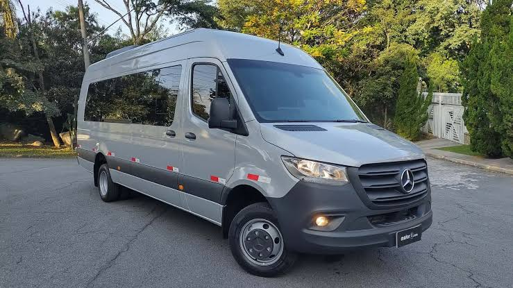

A cidade de Central dispõe de uma van no período matutino para a locomoção dos alunos até o IFBA, ela desbrava tudo quanto é roça, mata, ou trilha de gado, vale tudo para não dá de cara com uma blitz. Ela parte do terminal rodoviário de Central, em direção ao campus. No período vespertino, também é oferecida uma van, que parte do terminal rodoviário de Irecê.

Horários
Matutino:
6:00h Saída do local de partida
12:00 Saída da portaria IFBA
Vespertino:
17:30 Saída do terminal rodoviário de Irecê